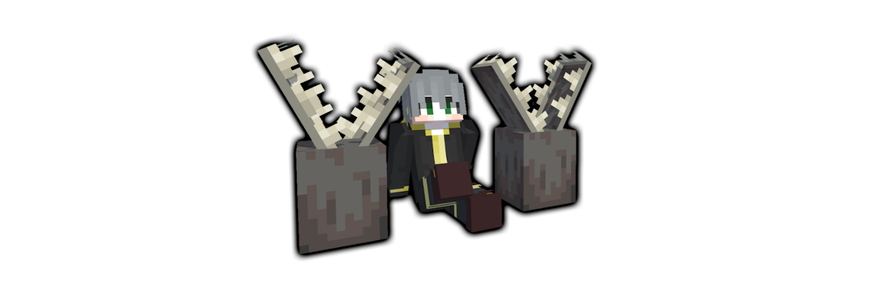
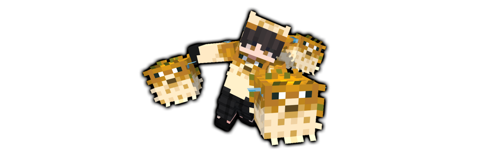

Patch9.1
効果の発動に弓とイミテイターウェポンの持ち替えが必要であるという要素を、AirrideとLeaper以外の移動系には適応させていなかったことを再確認しました。
これにより、PHASE-09になっても移動系を使う人が減ることはないのではないかと考察し（現在のメタがBastetであるため）、さらに一部生成系イミテイターを強化する方針にしました。
持ち替えを不要とするDopingとBastetを凌駕する能力を生成系のみに持たせることで、「機動力の移動系、単純強さの生成系、近距離奇襲の変化系、立て直しの転移系」という特性を持たせようと思います。
各種イミテイターの調整
ShockWaver / ショックウェーバー

- スニークしながら左クリックでY方向を含めた視点方向に飛ばせるように変更しました。
- 遠隔操作の速度倍率を0.15倍増加しました。
- 凍結時に現れる巨大化雪玉を消し去れる能力を追加しました。
Trapper / トラッパー
- 壁ジャンプ抑制のエフェクトを8秒に変更しました。
- 捕まった時に5秒のダークネスエフェクトを追加しました。
- 紫板ガラスを正面にして左右の水色板ガラスを青板ガラスに変更しました。
- 左クリック展開時の罠を青と紫の板ガラスに変更しました。
Haze / ヘイズ

- 敵への付与CTを2秒追加しました。
- マグマキューブの向きをプレイヤーと同期させました。
Spear / スピアー
- 発射されたフグの重力を元に戻しました。
Herobrine / ヘロブライン

- 死のカウントダウンを8秒に変更しました。
修正要素
ShockWaverキルに関する修正
Rotation及び、KillStreakなどのリスポーン可能なゲームにおいて、ShockWaverの奈落落としがキル扱いされない問題を修正しました。
透明化が消える問題を修正
Rotation及び、KillStreakなどのリスポーン可能なゲームにおいて、落下後に透明化が消えていた問題を修正しました。
貫通槍の修正
無重力から微重力に変更し、当てやすさを格段に向上させました。